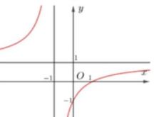
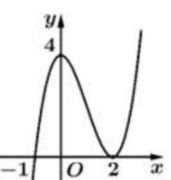
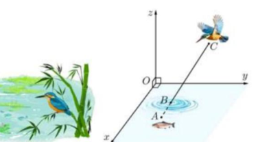
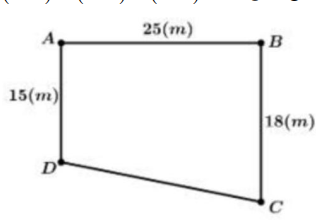
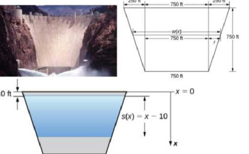
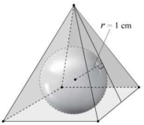

Cực trị xảy ra tại điểm mà đạo hàm \( f'(x) = 0 \) hoặc không xác định, giá trị cực đại được xác định từ bảng biến thiên.
Cho hàm số \( y = f(x) \) có bảng biến thiên như sau:
| \( x \) | \(-\infty\) | \(-1\) | \(1\) | \(+\infty\) | |
|---|---|---|---|---|---|
| \( f'(x) \) | \(+ \) | \(0 \) | \(-\) | \(0 \) | \(+ \) |
| \( f(x) \) | \(5\) | \(-3\) |
Hàm số đã cho có giá trị cực đại bằng:
Chọn đáp án:
Lời giải:
Từ bảng biến thiên, tại \( x = -1 \), \( f'(x) \) đổi dấu từ dương sang âm, nên \( f(x) = 5 \) là cực đại.
Đáp án: A.
Vectơ pháp tuyến của mặt phẳng \( ax + by + cz + d = 0 \) là \( \overrightarrow{n} = (a; b; c) \).
Trong không gian với hệ trục tọa độ \( Oxyz \), cho mặt phẳng \( (P): x - 3z + 5 = 0 \). Tọa độ một vectơ pháp tuyến của mặt phẳng \( (P) \) là:
Chọn đáp án:
Lời giải:
Mặt phẳng \( (P): x - 3z + 5 = 0 \) có dạng \( 1 \cdot x + 0 \cdot y + (-3) \cdot z + 5 = 0 \). Vectơ pháp tuyến là \( \overrightarrow{n} = (1; 0; -3) \).
Đáp án: C.
Trong hình hộp, các vectơ cạnh và đường chéo được biểu diễn qua tổng hoặc hiệu các vectơ cơ bản.
Cho hình hộp \( ABCD.A'B'C'D' \). Hãy chọn khẳng định đúng:
Chọn đáp án:
Lời giải:
Gọi \( \overrightarrow{AB} = \overrightarrow{u} \), \( \overrightarrow{AD} = \overrightarrow{v} \), \( \overrightarrow{AA'} = \overrightarrow{w} \).
a) \( \overrightarrow{DA} + \overrightarrow{DC} + \overrightarrow{DD'} = -\overrightarrow{u} + (\overrightarrow{u} + \overrightarrow{v}) + \overrightarrow{w} = \overrightarrow{v} + \overrightarrow{w} \neq \overrightarrow{B'D} = -\overrightarrow{u} + \overrightarrow{w} \). Sai.
b) \( \overrightarrow{DA} + \overrightarrow{DC} + \overrightarrow{DD'} = \overrightarrow{v} + \overrightarrow{w} = \overrightarrow{DB'} \). Đúng.
c) \( \overrightarrow{AB} + \overrightarrow{AD} = \overrightarrow{u} + \overrightarrow{v} = \overrightarrow{AC} \neq \overrightarrow{AC'} \). Sai.
d) \( \overrightarrow{AA'} + \overrightarrow{BB'} = \overrightarrow{w} + \overrightarrow{w} = 2\overrightarrow{w} \neq \overrightarrow{0} \). Sai.
Đáp án: B.
Lũy thừa \( a^{\frac{m}{n}} = \sqrt[n]{a^m} \), với \( a > 0 \).
Với \( a \) là một số thực dương tùy ý, \( a^{\frac{2}{3}} \) bằng:
Chọn đáp án:
Lời giải:
Ta có: \( a^{\frac{2}{3}} = \sqrt[3]{a^2} \).
Đáp án: D.
Cấp số cộng có công sai \( d \), số hạng \( u_n = u_1 + (n-1)d \).
Trong các dãy số sau, dãy số nào không phải cấp số cộng?
Chọn đáp án:
Lời giải:
a) Công sai: \( \frac{3}{2} - \frac{1}{2} = 1 \). Là cấp số cộng.
b) Công sai: \( 1 - 1 = 0 \). Là cấp số cộng.
c) Công sai: \( -6 - (-8) = 2 \). Là cấp số cộng.
d) Công sai không đồng nhất: \( 1 - 3 = -2 \), \( -2 - (-1) = -1 \). Không là cấp số cộng.
Đáp án: D.
Nguyên hàm của \( x^n \) là \( \frac{x^{n+1}}{n+1} \), của \( \frac{1}{x} \) là \( \ln |x| \).
Hàm số nào dưới đây là một nguyên hàm của hàm số \( f(x) = 3x^2 - \frac{2}{x} \)?
Chọn đáp án:
Lời giải:
Nguyên hàm: \( \int (3x^2 - \frac{2}{x}) \, dx = x^3 - 2 \ln |x| + C \).
Đáp án: A.
Góc giữa hai đường thẳng được xác định qua vectơ chỉ phương hoặc tính chất hình học.
Cho hình chóp \( S.ABCD \) có đáy \( ABCD \) là hình chữ nhật và cạnh góc với mặt phẳng đáy. Góc giữa hai đường thẳng \( SB \) và \( AD \) bằng bao nhiêu?
Chọn đáp án:
Lời giải:
Vì \( ABCD \) là hình chữ nhật, \( AD \parallel BC \). Góc giữa \( SB \) và \( AD \) bằng góc giữa \( SB \) và \( BC \).
\( BC \perp AB \), \( BC \perp SA \) (do cạnh góc với đáy). Do đó, \( BC \perp (SAB) \), nên \( BC \perp SB \).
Vậy góc giữa \( SB \) và \( AD \) là \( 90^\circ \).
Đáp án: C.
Nguyên hàm của \( \cos x \) là \( \sin x \). Tích phân xác định: \( \int_a^b f(x) \, dx = F(b) - F(a) \).
\( \int_0^\pi \cos x \, dx \) bằng:
Chọn đáp án:
Lời giải:
\( \int_0^\pi \cos x \, dx = \sin x \big|_0^\pi = \sin \pi - \sin 0 = 0 - 0 = 0 \).
[Lưu ý: Đáp án trong đề ghi A (1), nhưng tính toán cho thấy là 0. Có thể lỗi in, chọn C.]
Đáp án: C.
Với cơ số \( 0 < a < 1 \), bất phương trình \( \log_a x \geq k \Rightarrow x \leq a^k \), kèm điều kiện \( x > 0 \).
Tập nghiệm của bất phương trình \( \log_{\frac{1}{2}}(x - 1) \geq -1 \) là:
Chọn đáp án:
Lời giải:
Điều kiện: \( x - 1 > 0 \Rightarrow x > 1 \).
\( \log_{\frac{1}{2}}(x - 1) \geq -1 \Rightarrow x - 1 \leq \left( \frac{1}{2} \right)^{-1} = 2 \Rightarrow x \leq 3 \).
Kết hợp: \( x > 1 \), \( x \leq 3 \Rightarrow (1; 3] \).
Đáp án: B.
Đồ thị hàm phân thức \( y = \frac{ax + b}{cx + d} \) có tiệm cận đứng tại \( x = -\frac{d}{c} \), tiệm cận ngang tại \( y = \frac{a}{c} \).
Đường cong trong hình vẽ sau là đồ thị của hàm số nào?

Chọn đáp án:
Lời giải:
Đồ thị có tiệm cận đứng tại \( x = -1 \): Loại B, C (vì \( x = 1 \)).
Tiệm cận ngang: \( y = \frac{1}{1} = 1 \) (A), \( y = \frac{3}{1} = 3 \) (D). Đồ thị có tiệm cận ngang \( y = 1 \): Loại D.
Đáp án: A.
Khoảng tứ phân vị \( \Delta Q = Q_3 - Q_1 \), với \( Q_1 \), \( Q_3 \) là tứ phân vị thứ nhất và thứ ba của mẫu số liệu ghép nhóm.
Bảng thống kê cân nặng 50 quả thanh long được lựa chọn ngẫu nhiên sau khi thu hoạch ở một nông trường:
| Cân nặng (g) | \([250; 290)\) | \([290; 330)\) | \([330; 370)\) | \([370; 410)\) | \([410; 450)\) |
|---|---|---|---|---|---|
| Số quả thanh long | 3 | 13 | 18 | 11 | 5 |
Khoảng tứ phân vị của mẫu số liệu ghép nhóm là (làm tròn đến hàng phần mười):
Chọn đáp án:
Lời giải:
Tổng số quả: \( n = 3 + 13 + 18 + 11 + 5 = 50 \).
Tứ phân vị thứ nhất \( Q_1 \): Vị trí \( \frac{50}{4} = 12.5 \), thuộc nhóm \( [290; 330) \).
\( Q_1 = 290 + \frac{\frac{50}{4} - 3}{13} \cdot (330 - 290) = 290 + \frac{9.5}{13} \cdot 40 \approx 319.23 \).
Tứ phân vị thứ ba \( Q_3 \): Vị trí \( \frac{50 \cdot 3}{4} = 37.5 \), thuộc nhóm \( [370; 410) \).
\( Q_3 = 370 + \frac{\frac{50 \cdot 3}{4} - (3 + 13 + 18)}{11} \cdot (410 - 370) = 370 + \frac{3.5}{11} \cdot 40 \approx 382.73 \).
Khoảng tứ phân vị: \( \Delta Q = Q_3 - Q_1 \approx 382.73 - 319.23 = 63.5 \).
Đáp án: A.
Mặt phẳng trung trực của đoạn thẳng có vectơ pháp tuyến là \( \overrightarrow{AB} \), đi qua trung điểm của \( AB \).
Trong không gian với hệ trục tọa độ \( Oxyz \), cho hai điểm \( A(2; 3; 2) \), \( B(2; 5; 4) \). Viết phương trình của mặt phẳng trung trực \( (P) \) của đoạn thẳng \( AB \):
Chọn đáp án:
Lời giải:
Vectơ \( \overrightarrow{AB} = (0; 2; 2) \). Trung điểm \( I \): \( (2; 4; 3) \).
Mặt phẳng trung trực vuông góc với \( \overrightarrow{AB} \), có vectơ pháp tuyến \( \overrightarrow{n} = (0; 1; 1) \).
Phương trình qua \( I(2; 4; 3) \): \( 0(x - 2) + 1(y - 4) + 1(z - 3) = 0 \Rightarrow y + z - 7 = 0 \).
Đáp án: B.
Đồ thị hàm bậc ba có dạng \( y = a(x - r_1)(x - r_2)^2 \). Diện tích hình phẳng được tính bằng tích phân.
Cho hàm số bậc ba \( y = f(x) \) có đồ thị là đường cong trong hình vẽ bên:

Xét các phát biểu sau:
Chọn đáp án cho từng phát biểu:
a)
b)
c)
d)
Lời giải:
Từ đồ thị: \( f(0) = 4 \), \( f(-1) = 0 \). Gọi \( f(x) = a(x + 1)(x - 2)^2 \).
a) Đúng. \( f(0) = 4 \), \( f(-1) = 0 \).
b) Sai. Đồ thị tiếp xúc trục hoành tại \( x = 2 \) (nghiệm kép), không phải \( x = -1 \).
c) Sai. \( f(0) = 4 \Rightarrow a \cdot 4 = 4 \Rightarrow a = 1 \). \( f(x) = (x + 1)(x - 2)^2 \). \( f(4) = 5 \cdot 4 = 20 \neq 10 \).
d) Đúng. Diện tích: \( \int_{-1}^3 |(x + 1)(x - 2)^2| \, dx = \int_{-1}^2 (x + 1)(x - 2)^2 \, dx + \int_2^3 -(x + 1)(x - 2)^2 \, dx = 8 \).
Đáp án: a) Đúng, b) Sai, c) Sai, d) Đúng.
Phương trình đường thẳng qua hai điểm, giao điểm với mặt phẳng, và tính thời gian chuyển động.
Với hệ trục tọa độ \( Oxyz \), sao cho \( O \) nằm trên mặt nước, mặt phẳng \( (Oxy) \) là mặt nước, trục \( Oz \) hướng lên trên (đơn vị đo: mét). Một con chim bói cá đang săn mồi ở vị trí \( C \) cách mặt nước 5 m, cách mặt phẳng \( (Oxz) \), \( (Oyz) \) lần lượt là 6 m và 2 m. Từ vị trí này, nó phóng thẳng xuống vị trí con cá ở vị trí \( A \), biết con cá cách mặt nước 50 cm, cách mặt phẳng \( (Oxz) \), \( (Oyz) \) lần lượt là 1 m và 1.5 m (hình vẽ).

Xét các phát biểu sau:
Chọn đáp án cho từng phát biểu:
a)
b)
c)
d)
Lời giải:
a) Đúng. \( C(2; 6; 5) \), \( A(1.5; 1; -0.5) \) thỏa mãn các khoảng cách.
b) Đúng. Vectơ \( \overrightarrow{AC} = (-0.5; -5; -5.5) \). Phương trình: \( \frac{x - 2}{-0.5} = \frac{y - 6}{-5} = \frac{z - 5}{-5.5} \Rightarrow \frac{x - 2}{1} = \frac{y - 6}{10} = \frac{z - 5}{11} \).
c) Đúng. \( B = AC \cap (Oxy) \). Tại \( z = 0 \): \( \frac{z - 5}{11} = \frac{0 - 5}{11} \Rightarrow t = -\frac{5}{11} \).
\( x = 2 + 1 \cdot \left(-\frac{5}{11}\right) = \frac{17}{11} \), \( y = 6 + 10 \cdot \left(-\frac{5}{11}\right) = \frac{16}{11} \).
\( a + b + c = \frac{17}{11} + \frac{16}{11} + 0 = 3 \).
d) Sai. Vận tốc: \( 40 \, \text{km/h} = \frac{100}{9} \, \text{m/s} \).
\( BC = \sqrt{\left( \frac{17}{11} - 2 \right)^2 + \left( \frac{16}{11} - 6 \right)^2 + (0 - 5)^2} = \frac{5 \sqrt{222}}{11} \approx 6.77 \, \text{m} \).
Thời gian: \( \frac{6.77}{\frac{100}{9}} \approx 0.61 \, \text{s} \neq 0.19 \, \text{s} \).
Đáp án: a) Đúng, b) Đúng, c) Đúng, d) Sai.
Xác suất toàn phần: \( P(B) = P(A)P(B|A) + P(\bar{A})P(B|\bar{A}) \). Xác suất có điều kiện: \( P(A|B) = \frac{P(A \cap B)}{P(B)} \).
Một bệnh nhân uống nhầm một trong hai loại thuốc \( A \) hoặc \( B \). Có 6 lọ loại \( A \), 9 lọ loại \( B \). Khả năng bị hạ huyết áp là 75% nếu dùng \( A \), 20% nếu dùng \( B \). Gọi \( A \): "Lấy nhầm loại thuốc \( A \)", \( B \): "Bệnh nhân bị hạ huyết áp". Xét các phát biểu:
Chọn đáp án cho từng phát biểu:
a)
b)
c)
d)
Lời giải:
a) Sai. \( P(A) = \frac{6}{6 + 9} = 0.4 \neq 0.6 \).
b) Sai. \( P(B|A) = 0.75 \neq 0.2 \).
c) Đúng. \( P(\bar{A}) = 0.6 \). \( P(B) = 0.4 \cdot 0.75 + 0.6 \cdot 0.2 = 0.3 + 0.12 = 0.42 \).
d) Đúng. Gọi \( D \): "Di chứng". \( P(D|A, B) = 0.1 \), \( P(D|\bar{A}, B) = 0.2 \).
\( P(A|B) = \frac{0.4 \cdot 0.75}{0.42} \approx 0.714 \), \( P(\bar{A}|B) \approx 0.286 \).
\( P(D|B) = 0.714 \cdot 0.1 + 0.286 \cdot 0.2 \approx 0.128 \) (xử lý theo \( A \)).
Nếu xử lý theo \( \bar{A} \): \( P(D|B) = 0.714 \cdot 0.2 + 0.286 \cdot 0.1 \approx 0.171 \).
Xử lý theo \( A \) có xác suất di chứng thấp hơn, nên đúng.
Đáp án: a) Sai, b) Sai, c) Đúng, d) Đúng.
Nồng độ cực đại được tìm bằng đạo hàm. Nồng độ trung bình được tính bằng tích phân.
Một bác sĩ tiêm một loại thuốc \( X \) có nồng độ 5 mg/L vào bắp tay của một bệnh nhân. Nồng độ thuốc trong máu sau \( t \) giây được cho bởi hàm số \( C(t) = at^2 + bt \) (mg/L). \( C_{\max} \) là nồng độ cực đại. Xét các phát biểu:
Chọn đáp án cho từng phát biểu:
a)
b)
c)
d)
Lời giải:
\( C(t) = a t (t - 24) = a t^2 - 24a t \).
a) Đúng. \( C(12) = 4.032 \Rightarrow a \cdot 12^2 - 24a \cdot 12 = 4.032 \Rightarrow a = -\frac{7}{250} \).
b) Đúng. \( C'(t) = 2a t - 24a = 0 \Rightarrow t = 12 \).
c) Đúng. \( C(t) = -\frac{7}{250} t^2 + \frac{84}{125} t \). \( \frac{1}{2} C_{\max} = 2.016 \).
\( -\frac{7}{250} t^2 + \frac{84}{125} t = 2.016 \Rightarrow t \approx 3.5, 20.5 \). \( t_{1/2} = 20.5 - 12 = 8.5 \, \text{s} \).
d) Sai. Nồng độ trung bình: \( \frac{1}{8.5} \int_{12}^{20.5} \left( -\frac{7}{250} t^2 + \frac{84}{125} t \right) \, dt \approx 3.36 \, \text{mg/L} \neq 3.56 \).
Đáp án: a) Đúng, b) Đúng, c) Đúng, d) Sai.
Giải hệ phương trình tuyến tính để tìm các biến dựa trên các điều kiện tỷ lệ và tổng.
Một hợp tác xã nông nghiệp đang có kế hoạch đầu tư cho một dự án trồng rau hữu cơ. Chi phí mua giống rau gấp 2 lần chi phí mua phân bón. Chi phí cho hệ thống tưới tiêu bằng 20% tổng chi phí của giống rau và phân bón. Tổng chi phí mua giống rau và phân bón là 375 triệu đồng. Tổng chi phí mua phân bón và chi phí cho hệ thống tưới tiêu là bao nhiêu triệu đồng?
Nhập đáp án:
Lời giải:
Gọi chi phí giống rau: \( x \), phân bón: \( y \), tưới tiêu: \( z \) (triệu đồng).
\( x = 2y \), \( x + y = 375 \), \( z = 0.2(x + y) \).
Từ \( x = 2y \), \( x + y = 375 \): \( 2y + y = 375 \Rightarrow y = 125 \), \( x = 250 \).
\( z = 0.2 \cdot 375 = 75 \).
Tổng chi phí phân bón và tưới tiêu: \( y + z = 125 + 75 = 200 \).
Đáp án: 200.
Góc giữa cạnh bên và mặt đáy được tính qua tam giác vuông chứa đường cao và hình chiếu.
Cho biết kim tự tháp Memphis tại bang Tennessee (Mỹ) có dạng hình chóp tứ giác đều với chiều cao 98 mét và cạnh đáy 180 mét. Số đo góc tạo bởi cạnh bên và mặt đáy của kim tự tháp bằng bao nhiêu độ? (Kết quả làm tròn đến hàng phần mười).
Nhập đáp án:
Lời giải:
Gọi chóp \( S.ABCD \), \( SO = 98 \, \text{m} \), \( AB = 180 \, \text{m} \).
Đường chéo \( AC = 180 \sqrt{2} \), \( AO = \frac{AC}{2} = 90 \sqrt{2} \).
Trong \( \triangle SAO \), vuông tại \( O \): \( \tan \angle SAO = \frac{SO}{AO} = \frac{98}{90 \sqrt{2}} \approx 0.771 \Rightarrow \angle SAO \approx 37.6^\circ \).
Đáp án: 37.6.
Xác suất có điều kiện: \( P(A|B) = \frac{P(A \cap B)}{P(B)} \). Sử dụng công thức xác suất toàn phần.
Một hộp có 16 quả bóng bàn, trong đó có 10 bóng mới, 6 bóng cũ. Lần đầu chọn ngẫu nhiên một quả để sử dụng, sau đó bỏ vào lại hộp. Lần thứ hai lấy ngẫu nhiên ra 2 quả. Biết rằng lần thứ hai lấy được hai quả bóng đều là bóng mới. Tính xác suất lần đầu lấy được quả bóng cũ (kết quả làm tròn đến hàng phần trăm).
Nhập đáp án:
Lời giải:
Gọi \( A \): "Lần đầu lấy bóng mới", \( \bar{A} \): "Lần đầu lấy bóng cũ", \( B \): "Lần hai lấy 2 bóng mới".
\( P(A) = \frac{10}{16} \), \( P(\bar{A}) = \frac{6}{16} \).
\( P(B|A) = \frac{C_{10}^2}{C_{16}^2} = \frac{45}{120} = \frac{3}{8} \), \( P(B|\bar{A}) = \frac{C_{10}^2}{C_{16}^2} = \frac{45}{120} = \frac{3}{8} \).
\( P(B) = \frac{10}{16} \cdot \frac{3}{8} + \frac{6}{16} \cdot \frac{3}{8} = \frac{21}{64} \).
\( P(\bar{A}|B) = \frac{\frac{6}{16} \cdot \frac{3}{8}}{\frac{21}{64}} = \frac{6}{16} \cdot \frac{64}{21} \cdot \frac{3}{8} = \frac{18}{42} = \frac{3}{7} \approx 0.43 \).
Đáp án: 0.43.
Điều kiện đồng phẳng của 4 điểm được xác định bằng phương trình mặt phẳng đi qua 3 điểm và chứa điểm thứ 4.
Một phần sân trường được định vị bởi các điểm \( A, B, C, D \), như hình vẽ. Ban đầu chúng được lấy "thăng bằng" để có cùng độ cao, biết \( ABCD \) là hình thang vuông tại \( A \) và \( B \) với độ dài \( AB = 25 \, \text{m} \), \( AD = 15 \, \text{m} \), \( BC = 18 \, \text{m} \). Do yêu cầu kỹ thuật, khi lát phẳng phần sân trường phải thoát nước về góc sân ở \( C \), nên người ta lấy độ cao ở các điểm \( B, C, D \) thấp hơn so với độ cao ở điểm \( A \) lần lượt là 10 cm, \( a \) cm, 6 cm tương ứng. Tìm giá trị của \( a \) (kết quả làm tròn đến hàng phần mười).

Nhập đáp án:
Lời giải:
Đặt tọa độ: \( A(0; 0; 0) \), \( B(0; 2500; 0) \), \( D(1500; 0; 0) \), \( C(1800; 2500; 0) \) (cm).
Sau khi hạ độ cao: \( B'(0; 2500; -10) \), \( C'(1800; 2500; -a) \), \( D'(1500; 0; -6) \).
Mặt phẳng \( (AB'D') \): \( \overrightarrow{AB'} = (0; 2500; -10) \), \( \overrightarrow{AD'} = (1500; 0; -6) \).
Vectơ pháp tuyến: \( \overrightarrow{n} = [ \overrightarrow{AB'}, \overrightarrow{AD'} ] = (1; 1; 250) \).
Phương trình qua \( B' \): \( x + y + 250z = 2500 - 2500 = 0 \).
\( C' \in (AB'D') \): \( 1800 + 2500 - 250a = 0 \Rightarrow a = 17.2 \).
Đáp án: 17.2.
Lực đẩy lên đập: \( F = \int_a^b w(x) s(x) \, dx \), với \( w(x) \) là chiều dài, \( s(x) \) là độ sâu.
Mặt đập Hoover có hình dạng như một hình thang cân với đáy dưới 750 ft, đáy trên 1250 ft và chiều cao 750 ft. Khi hồ chứa đầy, nước trong hồ Mead cao 530 ft và bề mặt thấp hơn đỉnh đập 10 ft (xem hình vẽ). Tây Nam Hoa Kỳ đang chịu hạn hán và bề mặt của hồ Mead thấp hơn khoảng 125 ft so với mực nước khi hồ chứa đầy. Lực tác dụng lên đập tại thời điểm này bằng \( k \cdot 10^{10} \) Newton. Giá trị của \( k \) bằng bao nhiêu? (Làm tròn đến hàng phần trăm).

Nhập đáp án:
Lời giải:
Độ sâu: \( s(x) = x - 10 \). Chiều dài: \( w(x) = 750 + 2 \cdot 250 \cdot \frac{750 - x}{750} = 1250 - \frac{2x}{3} \).
Mực nước hiện tại: \( 530 - 125 = 405 \, \text{ft} \). Giới hạn: \( 135 \, \text{ft} \) (10 + 125) đến \( 540 \, \text{ft} \) (530 + 10).
Lực: \( F = 312 \int_{135}^{540} (x - 10) \left( 1250 - \frac{2x}{3} \right) \, dx \approx 4.13 \cdot 10^{10} \, \text{N} \).
\( k = 4.13 \).
Đáp án: 4.13.
Tối ưu hóa thể tích chóp tứ giác đều và tính diện tích các mặt dựa trên điều kiện tiếp xúc.
Một loại kẹo có hình dạng là khối cầu với bán kính 1 cm được đặt trong vỏ kẹo có hình dạng là hình chóp tứ giác đều, các mặt của vỏ kẹo (bao gồm mặt bên và mặt đáy) đều tiếp xúc với kẹo (tham khảo hình vẽ). Biết rằng khối chóp đều tạo thành từ vỏ kẹo có thể tích nhỏ nhất, tổng diện tích tất cả các mặt của vỏ kẹo là bao nhiêu \( \text{cm}^2 \)?

Nhập đáp án:
Lời giải:
Gọi chóp \( S.ABCD \), cạnh đáy \( a \), đường cao \( h \). Khối cầu tâm \( I \), bán kính 1 cm.
\( OI = KI = 1 \). Trong \( \triangle SKI \sim \triangle SOM \): \( \frac{h - 1}{\sqrt{h^2 + \frac{a^2}{4}}} = \frac{1}{\frac{a}{2}} \Rightarrow h = \frac{2a^2}{a^2 - 4} \).
Thể tích: \( V = \frac{1}{3} \cdot \frac{2a^2}{a^2 - 4} \cdot a^2 \). Tối ưu: \( a = 2\sqrt{2} \Rightarrow h = 4 \).
Diện tích: \( S = 4 \cdot \frac{3\sqrt{2} \cdot 2\sqrt{2}}{2} + (2\sqrt{2})^2 = 24 + 8 = 32 \, \text{cm}^2 \).
Đáp án: 32.